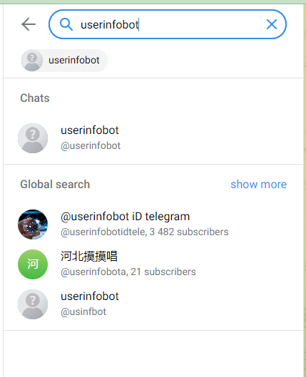
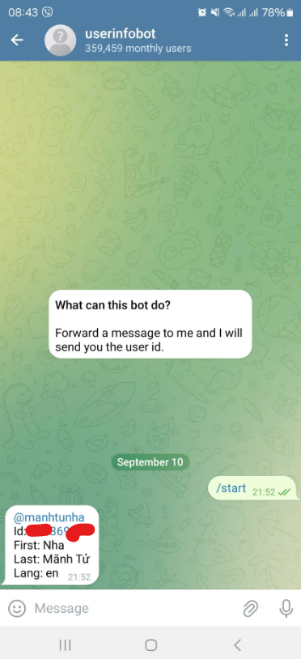

Đầu tiên, bạn cần mở ứng dụng Telegram trên điện thoại hoặc máy tính.
Trong thanh tìm kiếm của Telegram, nhập @userinfobot và chọn bot này trong kết quả tìm kiếm.
Nhấn vào nút Start để bắt đầu cuộc trò chuyện với bot. Sau đó, bot sẽ tự động trả về thông tin ID của bạn.
